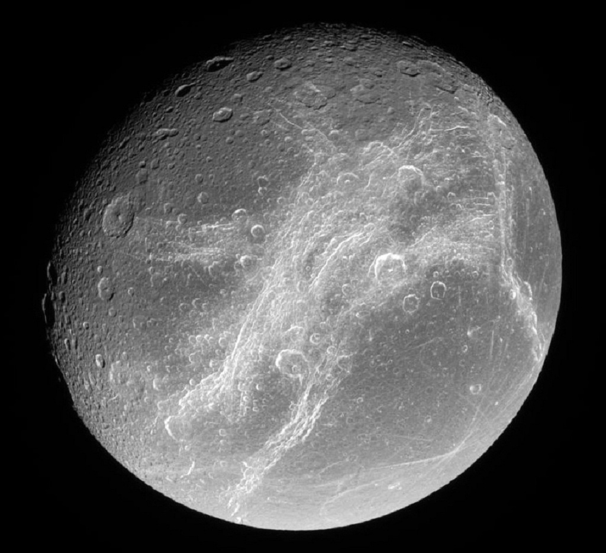

Titan (Ancient Greek: Τῑτάν) is one of Saturn's moons. Its equatorial diameter (wideness at the equator) is 5,150 km and it orbits (moves in an ellipse) 1,221,865 km away from Saturn. It was found by Christiaan Huygens on March 25, 1655. Titan is the largest moon of Saturn and the second largest of the Solar System. Titan is larger (in volume) than the planet Mercury. Titan has the greatest atmosphere (most air) of any moon, with more than Earth, but humans cannot breathe it as it's very cold, and also poisonous. The air is made of nitrogen and methane. It is also the only place in the Solar System, except Earth, that has lakes and lots of liquid on its surface. However, it is liquid methane, not water.
Rhea may have a thin ring system with three narrow bands in a disk of solid particles. These would be the first rings seen around a moon. The discovery was announced in the journal Science on March 6, 2008.